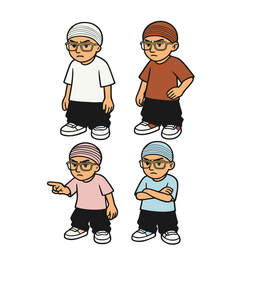

Trade Mark Journal No.2025/044 31 October 2025
UK00004253559 23 August 2025 (25)

- Class 25
- Clothing; Knitwear [clothing]; Jackets [clothing]; Ready-to-wear clothing; Woolen clothing; Furs [clothing]; Garments for protecting clothing; Clothing layettes; Layettes [clothing]; Linen clothing; Headbands [clothing]; Headbands for clothing; Gloves [clothing]; Gloves as clothing; Clothes; Aprons [clothing]; Maternity clothing; Kerchiefs [clothing]; Jerseys [clothing]; Denims [clothing]; Shorts [clothing]; Cashmere clothing; Capes (clothing); Oilskins [clothing]; Gabardines [clothing]; Leather clothing; Clothing of leather; Leather (Clothing of -); Silk clothing; Collars [clothing]; Parts of clothing, footwear and headgear; Veils [clothing]; Knitted clothing; Windproof clothing; Hoods [clothing]; Corsets [clothing, foundation garments]; Embroidered clothing; Wristbands [clothing]; Belts [clothing]; Belts for clothing; Bandeaux [clothing]; Waterproof clothing; Rainproof clothing; Casual clothing; Visors [clothing]; Jackets being sports clothing; Stuff jackets [clothing]; Jackets (Stuff -) [clothing]; Bottoms [clothing]; Playsuits [clothing]; Clothing for leisure wear; Ready-made clothing; Latex clothing; Trunks being clothing; Woven clothing; Infant clothing; Drawers [clothing]; Leisure clothing; Clothing for sports; Sports clothing; Drawers as clothing; Ties [clothing]; Athletic clothing; Clothing for children; Muffs [clothing]; Bodies [clothing]; Clothing for babies; Tops [clothing]; Clothing for infants; Clothing for cycling; Weatherproof clothing; Fabric belts [clothing]; Pockets for clothing; Water-resistant clothing; Triathlon clothing; Clothing for skiing; Handwarmers [clothing]; Beach clothing; Thermal clothing; Chaps (clothing); Cowls [clothing]; Men's clothing; Fishing clothing; Braces for clothing; Mitts [clothing]; Dance clothing; Turtleneck shirts; Shirts; Dress shirts; Short-sleeve shirts; Short-sleeved shirts; Long-sleeved shirts; Sweat shirts; Open-necked shirts; Polo shirts; Shirt yokes; Yokes (Shirt -); Mock turtleneck shirts; Knit shirts; Pique shirts; Collared shirts; Corduroy shirts; Sleep shirts; Camouflage shirts; Short-sleeved T-shirts; Rugby shirts; Football shirts; Hooded sweat shirts; Shirts for suits; Maternity shirts; Button-front aloha shirts; Golf shirts; Soccer shirts; Night shirts; Shirts and slips; Ramie shirts; Woven shirts; Button down shirts; Dress pants; T-shirts; Aloha shirts; Shirt fronts; Yoga shirts; Casual shirts; Tennis shirts; Sleeveless jerseys; Sport shirts; Bibs, sleeved, not of paper; Fishing shirts; Under shirts; Sweat pants; Denim pants; Jeans; Bib shorts; Sports shirts with short sleeves; Moisture-wicking sports shirts; Sports shirts; Nappy pants [clothing]; Hunting shirts; Trousers shorts; Tee-shirts; Pants; Boy shorts [underwear]; Leggings [trousers]; Sweatpants; Babies' pants [underwear]; V-neck sweaters; Babies' pants [clothing]; Polo sweaters; American football shirts; Sweat shorts; Camouflage pants; Turtleneck sweaters; Blue jeans; Sleeveless jackets; Printed t-shirts; Denim jeans; Trousers for sweating; Undershirts; Padded shirts for athletic use; Corduroy pants; Stretch pants; Mock turtleneck sweaters; Trousers; Maternity pants; Polo knit tops; Sleep pants; Undershirts for kimonos (juban); Golf trousers; Waterproof pants; Men's dress socks; Dress shoes; Pyjamas [from tricot only]; Pants (Am.); Bibs, not of paper; Baby pants; Chino pants; Snowboard trousers; Pirate pants; Corduroy trousers; Maternity shorts; Breeches for wear; Clothing for wear in wrestling games; Romper suits; Warm-up pants; Fleece shorts; Bib tights; Moisture-wicking sports pants; Sleeved jackets; Baby bibs [not of paper]; Golf clothing, other than gloves; Underwear; Bib overalls for hunting; Trouser socks; Snap crotch shirts for infants and toddlers; Slacks; Short overcoat for kimono (haori); Rugby shorts; Maternity wear; Shorts; Skirt suits; Shoes for casual wear; Hoodies; Sweatshirts; Hooded pullovers; Beanies; Fleece jackets; Tracksuits; Sweaters; Beanie hats; Jackets; Fleece pullovers; Men's and women's jackets, coats, trousers, vests; Cardigans; Turtleneck pullovers; Denim jackets; Snowboard jackets; Balaclavas; Tank-tops; Camouflage jackets; Knit jackets; Turtlenecks; Sleeveless pullovers; Pullovers; Parkas; Anoraks [parkas]; Bandanas; Sweat jackets; Quilted jackets [clothing]; Jumpers [sweaters]; Jumpers [pullovers]; Hooded tops; Overshirts; Fleece vests; Polar fleece jackets; Gilets; Hooded bathrobes; Trenchcoats; Tracksuit tops; Scarves; Sheepskin jackets; Blouson jackets; Jumpsuits; Casual jackets; Sweatsuits; Fur coats and jackets; Sports jackets; Fleece tops; Bandanas [neckerchiefs]; Overcoats; Scarfs; Stuff jackets; Cashmere scarves; Fur jackets; Waistcoats [vests]; Hats; Bandannas; Tracksuit bottoms; Windproof jackets; Bomber jackets; Blazers; Toques [hats]; Party hats [clothing]; Mufflers [clothing]; Gloves for apparel; Jerseys; Wind-resistant jackets; Collars for dresses; Padded jackets; Weatherproof jackets; Jockstraps [underwear]; Briefs [underwear]; Sweat-absorbent underclothing [underwear]; Trunks [underwear]; Sweat-absorbent underwear; Underwear (Anti-sweat -); Anti-sweat underwear; Maternity underwear; Disposable underwear; Knitted underwear; Undergarments; Underwear for women; Thermal underwear; Underpants; Men's underwear; Functional underwear; Underclothes; Women's underwear; Long underwear; Gussets for underwear [parts of clothing]; Panties; Teddies [undergarments]; Ladies' underwear; Lingerie; Slips [undergarments]; Knickers; Underpants for babies; G-strings; Thongs; Jogging bottoms [clothing]; Underclothing; Maternity lingerie; Teddies [underclothing]; Thong sandals; Pajamas; Underclothing (Anti-sweat -); Anti-sweat underclothing; Corsets [underclothing]; Sweat-absorbent underclothing; Socks and stockings; Bodices [lingerie]; Pyjamas; Braces for clothing [suspenders]; Jogging pants; Bra straps [parts of clothing]; Anti-perspirant socks; Leather pants; Braces [suspenders] for clothing / Suspenders [braces] for clothing; Slips [underclothing]; Gussets for tights [parts of clothing]; Babies' undergarments; Swimsuits; Hosiery; Beach clothes; Slips [clothing]; Nipple pasties being underclothing; Cycling pants; Sweat-absorbent socks; Bed socks; Maillots [hosiery]; Bras; Pantyhose; Womens' undergarments; Socks; Slipper socks; Anklets [socks]; Toe socks; Ankle socks; Woollen socks; Footless socks; Non-slip socks; Thermal socks; Yoga socks; Men's socks; Tennis socks; Socks for men; Sports socks; Water socks; Pop socks; Inner socks for footwear; Sock suspenders; American football socks; Japanese style socks (tabi); Insoles [for shoes and boots]; Insoles for shoes and boots; Knitted baby shoes; Bootees (woollen baby shoes); Knee-high stockings; Japanese style socks (tabi covers); Slippers; Shoes; Knitted gloves; Valenki [felted boots]; Socks for infants and toddlers; Esparto shoes or sandles; Woollen tights; Stockings (Sweat-absorbent -); Sweat-absorbent stockings; Stockings [sweat-absorbent]; Tongues for shoes and boots; Legwarmers; Mittens; Pullstraps for shoes and boots; Stockings; Shoes for leisurewear; Booties; Slip-on shoes; Stockings (Heel pieces for -); Heel pieces for stockings; Esparto shoes or sandals; Tights; Pedicure slippers; Lace boots; Waterproof shoes; Sandals and beach shoes; Hiking shoes; Foam pedicure slippers; Insoles for footwear; Sneakers [footwear]; Rubber shoes; Shoe soles; Heel protectors for shoes; Slipper soles; Footwear soles; Soles for footwear; Yoga shoes; Shoes for foot volleyball; Foot volleyball shoes; Wooden shoes [footwear]; Snow pants; Ankle boots; Sneakers; Heel pieces for shoes; Russian felted boots (Valenki); Leather slippers; High-heeled shoes; Mountaineering shoes; Sandals; Soccer shoes; Flip-flops for use as footwear; Hidden heel shoes; Knee warmers [clothing]; Boots; Capri pants; Knitted tops; Footless tights; Fingerless gloves as clothing; Jogging shoes; Leather jackets; Trousers of leather; Suede jackets; Leather waistcoats; Leather garments; Leather coats; Leather shoes; Leather dresses; Leather suits; Suits of leather; Leather belts [clothing]; Leather headwear; Clothing made of leather; Imitation leather dresses; Clothing of imitations of leather; Leather (Clothing of imitations of -); Waterproof jackets; Jacket liners; Clothing made of imitation leather; Motorcyclists' clothing of leather; Belts made of leather; Suits made of leather; Rainproof jackets; Waterproof trousers; Japanese style sandals of leather; Slippers made of leather; Motorcycle jackets; Belts made from imitation leather.
Couture clo ltd